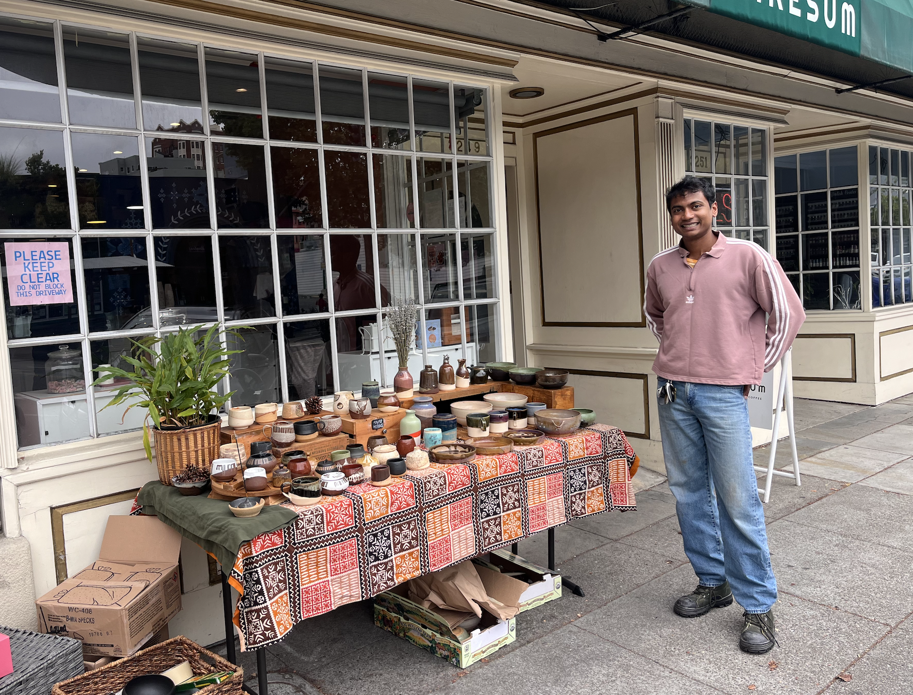
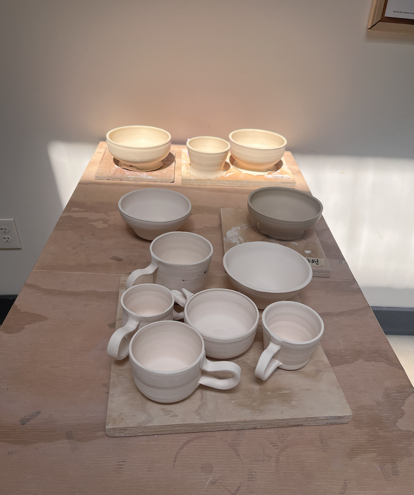
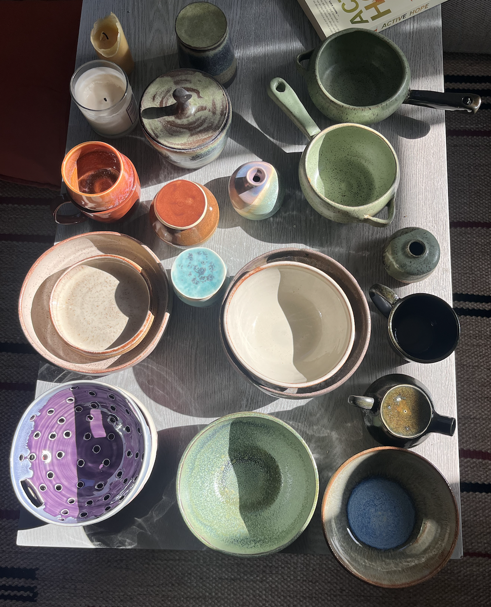
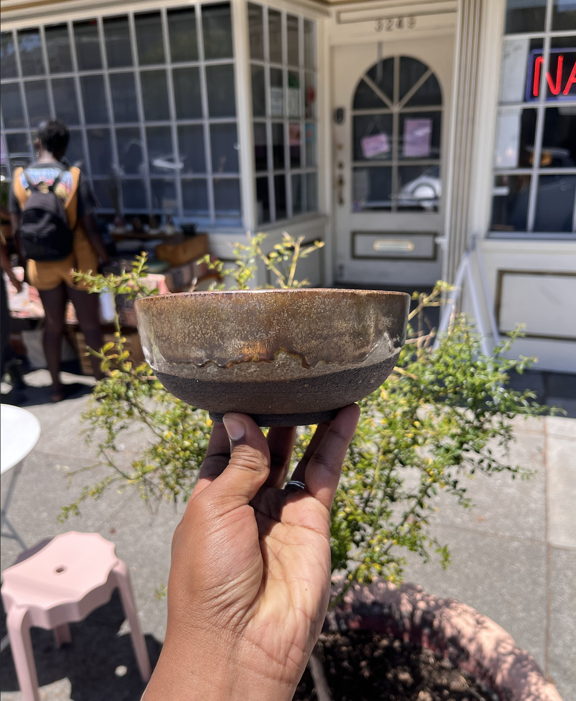
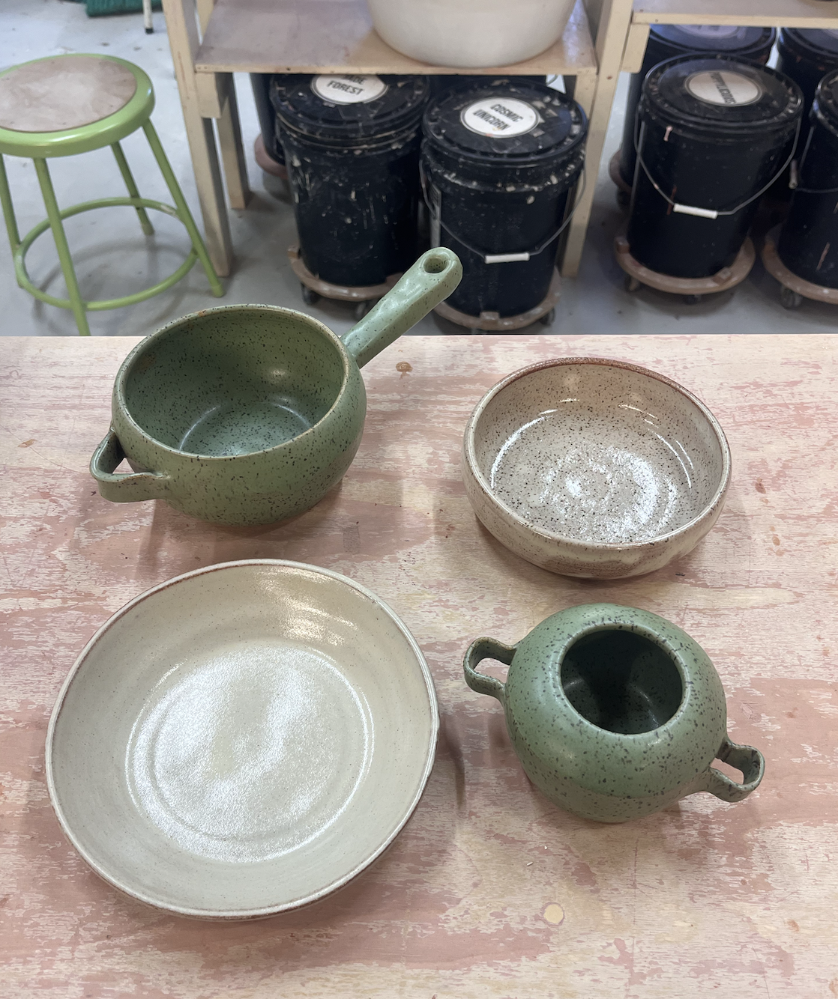
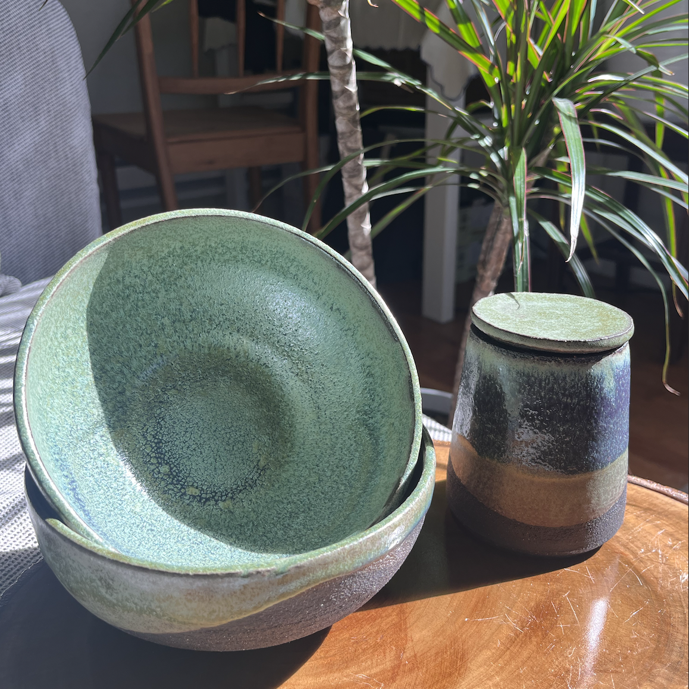

Ceramics
Learning patience, form, and function through clay.
Ceramics is a meditative practice and a way for me to stay connected to the Earth and to myself. Through clay, I am learning to create useful objects slowly, develop my own visual language, and better understand the relationship between form, material, and everyday life.

Practice
Creating objects that are useful, grounded, and personal
My work is currently focused on functional forms: bowls, cups, vessels, planters, and objects intended to become part of everyday rituals.
I am interested in the small decisions that shape a piece: weight, proportion, texture, glaze, and the way an object feels when held. Each piece is an experiment in attention and repetition.
Selected work
Forms, experiments, and works in progress






Reflection
A practice in patience and self-sustenance
My goal with ceramics is not only to improve technically, but also to discover a style of making that feels distinctly my own.
It is one of my experiments in self-sustenance: learning how to make useful, durable objects by hand and developing a closer relationship with the materials that shape daily life.
Back to the portfolio
Return to the homepage →